Revisiting the Outbox Pattern in Go
ContainerDays Hamburg
10 Sep 2025
Nikolay Kuznetsov

About me
Senior Software Engineer
Zalando Helsinki 🇫🇮
C → Java → Kotlin → Go
Author of pgx-outbox library
Talk inspirations
Revisiting the Outbox Pattern - Gunnar Morling
Personal experience
Company experience
Dual write problem
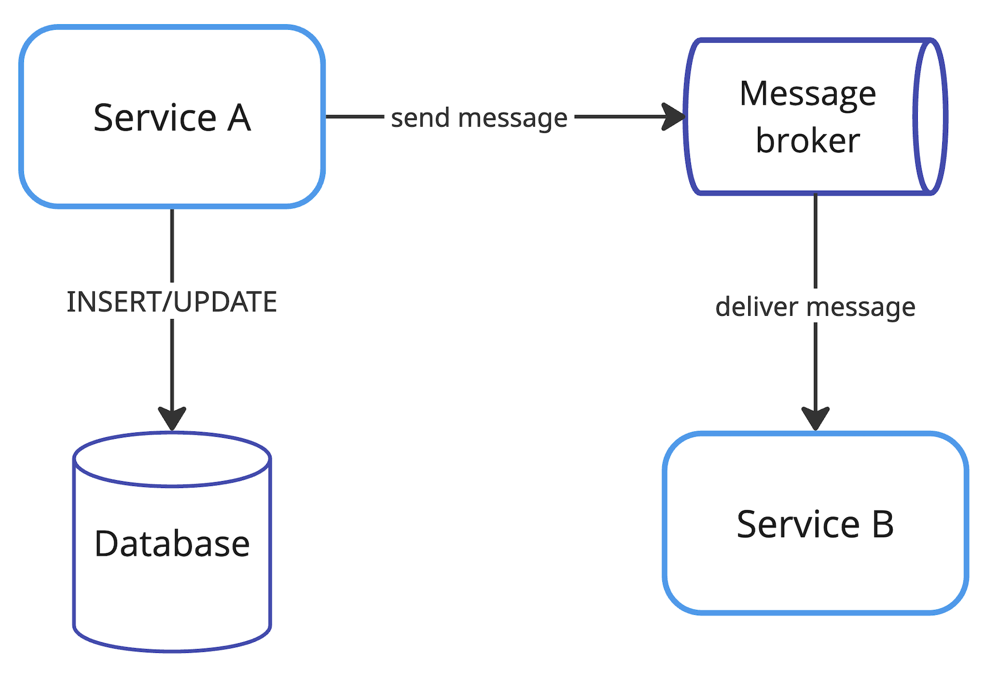Dual write problem
Service A writes to DB and message broker
Inconsistent system state if any of writes fails
Naive approaches
▪ Write to DB first, then send to broker
▪ Send to broker first, then write to DB
▪ Send to broker within DB tx before commit
Database first
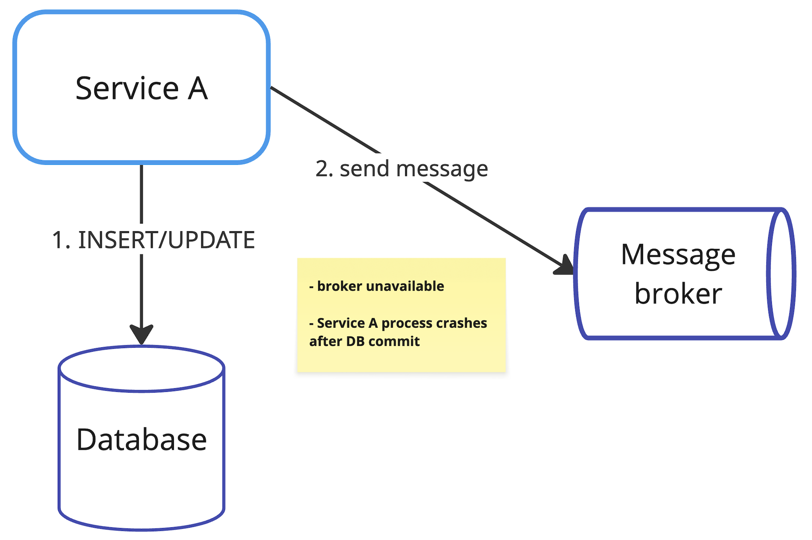Broker first
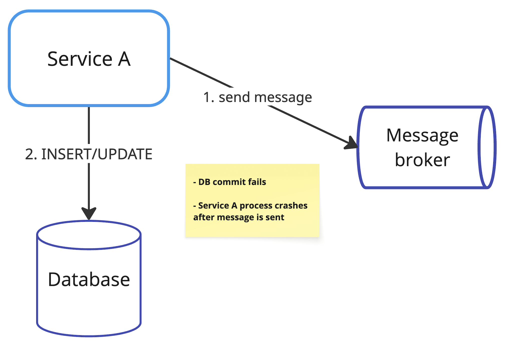Send inside DB tx

Transactional outbox pattern
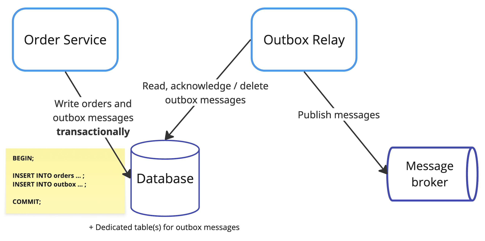Outbox table example
CREATE TABLE outbox (
id BIGINT PRIMARY KEY GENERATED ALWAYS AS IDENTITY,
payload JSONB NOT NULL,
created_at TIMESTAMP DEFAULT CURRENT_TIMESTAMP NOT NULL,
-- additional metadata: event type, domain object type and id, topic
);Outbox pattern pros
one of solutions to dual write problem
➕ Atomicity between orders and outbox messages
➕ At least once delivery to message broker
Outbox pattern cons
➖ Message publication delay
➖ Extra code or deployment unit
➖ Consumer might need to deduplicate
➖ Increased database load
Reading from outbox

▪ Periodic polling
▪ Log-based change data capture (CDC)
Periodic polling
- ▪ SELECT (with LIMIT)
-
▪ Options to mark published:
- DELETE by ids
- UPDATE published_at by ids
- Store latest id in a separate table
Go libs with polling
▪ Watermill-SQL
▪ pgx-outbox
▪ go-outbox, ▪ outboxer
general purpose queues: ▪ River, etc
pgx-outbox
Strong focus on Postgres and pgx driver
Implements Message, Writer, Forwarder
UPDATE approach to mark published messages
Inspired by Watermill Forwarder
pgx-outbox architecture
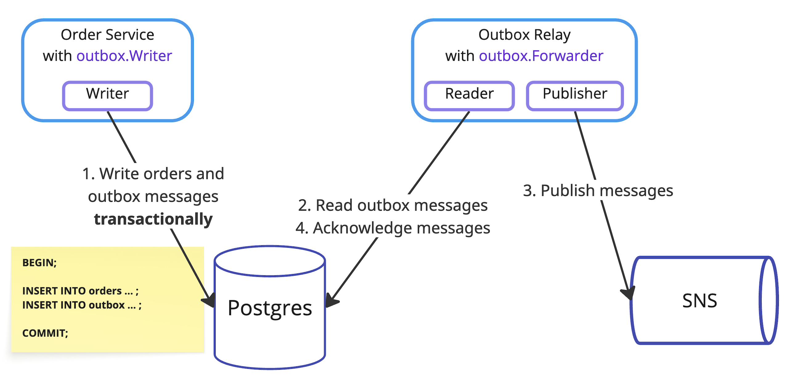Outbox Writer
type Writer interface {
// supports both pgx.Tx and stdlib *sql.Tx
Write(ctx, tx Tx, message Message) (int64, error)
// pgx transaction only to invoke SendBatch and Prepare methods
WriteBatch(ctx, tx pgx.Tx, messages []Message) ([]int64, error)
}Tracing with otelpgx
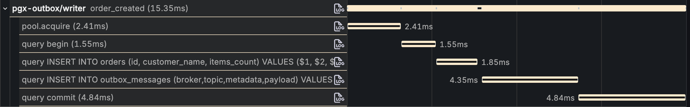Polling cons
➖ Low publication delay vs polling too often
➖ Risk of starving other workloads under high traffic
➖ UPDATE and DELETE create dead tuples (MVCC)
➖ Autovacuum settings might need tuning
Log-based CDC
Write-Ahead Log (WAL) in Postgres
➕ Lower publication delay (tens of ms)
➕ Reduced DB load: avoids polling, dead tuples
➕ Events emitted in exact commit order
Write-Ahead Log
▪ append-only binary log of all row-level changes
▪ written before data files, ensures crash recovery
▪ changes grouped per transaction in commit order
▪ exists in shared buffer, flushed to on-disk files
Postgres process and memory architecture
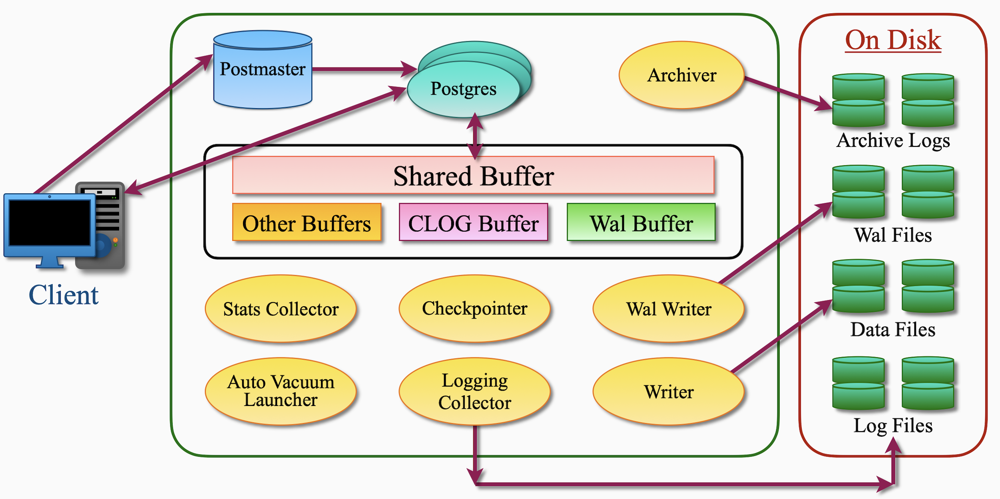Transactions example
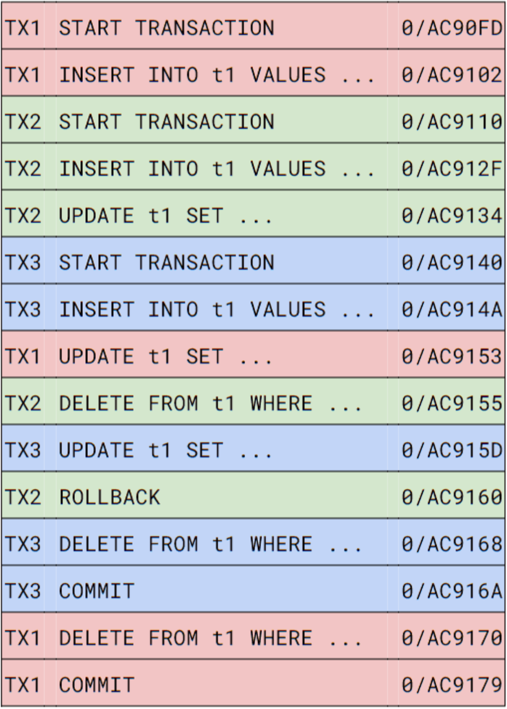Corresponding WAL
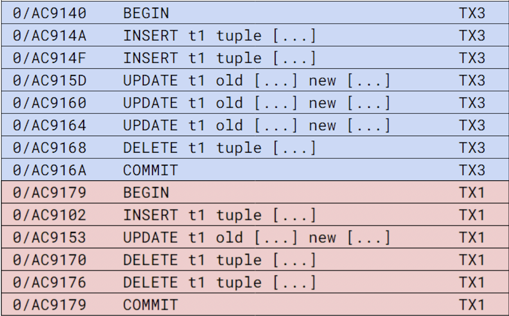Reading from WAL
Logical replication protocol in Postgres
▪ Debezium ☕ (Server)
▪ jackc/pglogrepl
▪ PeerDB
Debezium
Connectors for Kafka Connect or standalone Server
Consumes DB events and can send to sinks
Very mature, started in 2015 by Red Hat
Open source, written in Java
Debezium architectures
 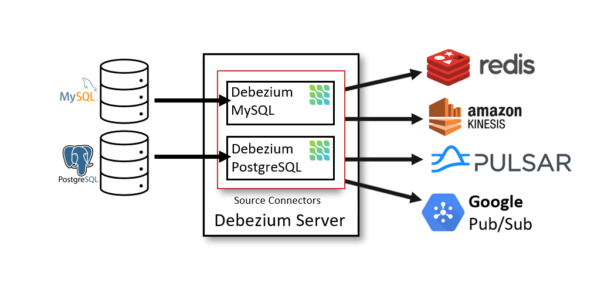
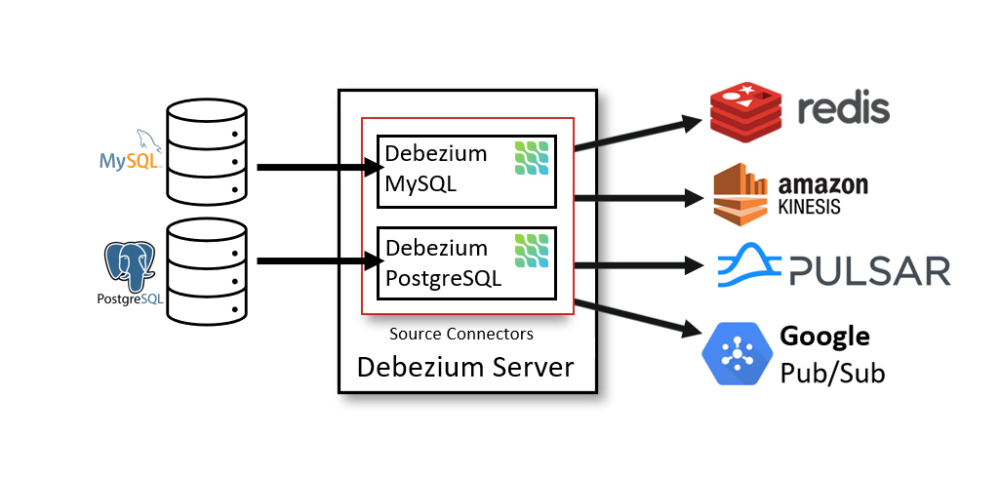
Server config example
# Source: Postgres
debezium.source.connector.class=io.debezium...PostgresConnector
debezium.source.database.{*}=
debezium.source.plugin.name=pgoutput
debezium.source.publication.name=debezium_publication
debezium.source.slot.name=debezium_slot
debezium.source.table.include.list=public.outbox_messages
# Sink: HTTP
debezium.sink.type=http
debezium.sink.http.url=http://http-listener:8080
# Output format & single message transformation (SMT)
debezium.format.{key,value}=json
debezium.transforms=unwrap
Outbox event router
▪ Implemented as Kafka Connect SMT
▪ Suggests outbox table schema:
id, aggregateid, aggregatetype, type, payload
▪ Routes to Kafka topic based on aggregatetype
▪ Uses aggregateid as message key
Debezium + Go
▪ Kubernetes CRD + Operator for CDC
▪ Operator creates single-pod Deployment
▪ Pod is powered by Debezium,
captures outbox inserts in source DB,
publishes to message broker sink
Debezium Demo?
jackc/pglogrepl
decodes logical replication messages
includes a basic example
400 stars, 200 users
same author as pgx driver
not actively maintained
Concepts
Publication
Replication slot
Decoding plugin
Log sequence number (LSN)
Publication
definition of tables and CDC operations to be published to consumers
CREATE PUBLICATION pub1 FOR TABLE t1, t2;
-- ALL TABLES
-- WITH (publish = 'insert, update', 'delete', 'truncate');
SELECT * FROM pg_publication;
query := "CREATE PUBLICATION pub1 FOR TABLE t1, t2"
result := conn.Exec(ctx, query) // low level *pgconn.PgConn
defer result.Close()
_, err := result.ReadAll()
Replication slot
named position in WAL to track a replication consumer progress
SELECT pg_create_logical_replication_slot('slot', 'pgoutput');
SELECT * FROM pg_replication_slots;
pglogrepl.CreateReplicationSlot(ctx, conn, "slot", "pgoutput")
Decoding plugins
pgoutput - built-in, default
test_decoding - built-in, only for testing
wal2json - 3rd party, produces JSON
decoderbufs, pglogical
pgoutput arguments
pluginArguments := []string{
"proto_version '2'", // versions 3 and 4 are not supported by the lib
fmt.Sprintf("publication_names '%s'", "pub1"),
"messages 'false'", // pg_logical_emit_message() is not used
"streaming 'false'", // receive only committed transactions
}
Starting replication
LSN is a unique 64-bit address in WAL, e.g. 0/AC90FD
START_REPLICATION SLOT slot LOGICAL 0/AC90FD -- LSN where to start
("proto_version" '2',
"publication_names" 'pub1',
"messages" 'false',
"streaming" 'false');
sysIdent, err := pglogrepl.IdentifySystem(ctx, conn)
pglogrepl.StartReplication(ctx, conn, "slot", sysIdent.XLogPos,
pglogrepl.StartReplicationOptions{PluginArgs: pluginArguments})
Message loop
for {
var rawMsg pgproto3.BackendMessage
rawMsg, err := conn.ReceiveMessage(ctx)
switch msg.Data[0] {
// XLog is historical name for WAL
case pglogrepl.XLogDataByteID: // 'w'
err = handleXLogData(msg.Data[1:]) // actual data
case pglogrepl.PrimaryKeepaliveMessageByteID: // 'k'
err = handlePrimaryKeepalive(msg.Data[1:])
}
}
Handling data
▪ Insert messages
▪ Relation messages
▪ Status updates:
write, flush, apply positions
PeerDB
▪ efficient data streaming from Postgres
▪ written in Go (and Rust)
▪ uses Temporal orchestration engine
▪ open-source, Elastic License 2.0 (ELv2)
▪ acquired by ClickHouse, integrated to ClickPipes
Pitfalls
WAL bloat
Recent bug in Postgres